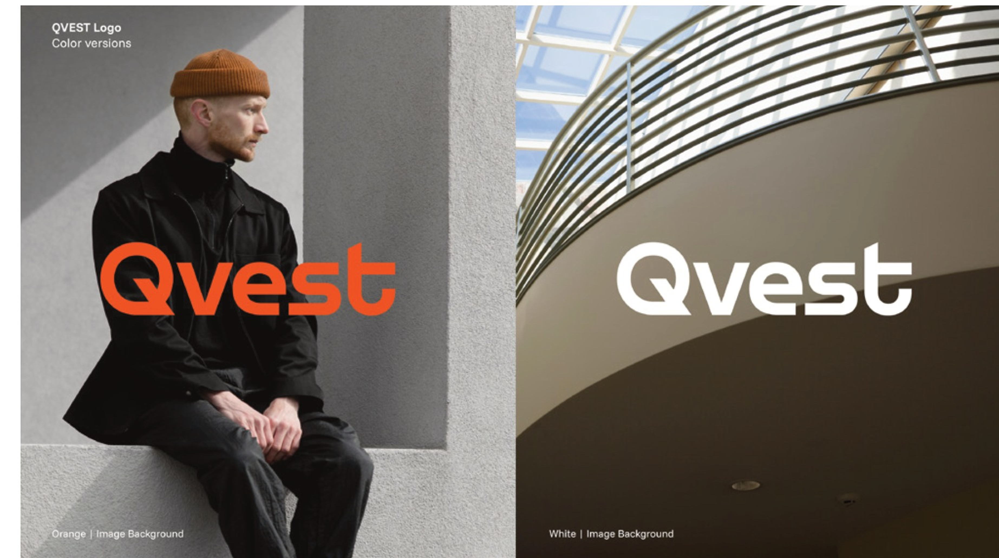
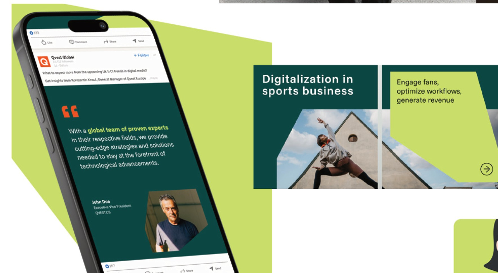
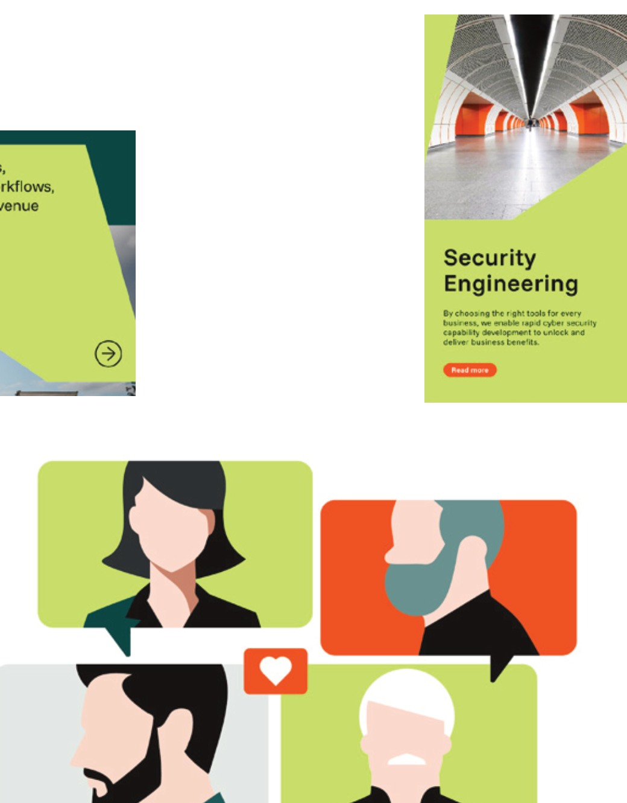

Task
Supporting the company-wide introduction of the new QVEST brand identity. The new design had to work consistently across internal and external communication while remaining practical for everyday use.
QVEST
Turning strategic brand principles into scalable applications — across social media, presentations, publications and the everyday tools teams actually need.

Task
Supporting the company-wide introduction of the new QVEST brand identity. The new design had to work consistently across internal and external communication while remaining practical for everyday use.
My contribution
Impact
Visual excerpts from the project, drawn from the selected-work portfolio.


Next project
MINI